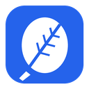

InkleafPrivacy policy
Last updated: 3 November 2026
Inkleaf is a note-taking app for Windows, Linux and Android. This policy explains what data it handles and where that data goes. In short: your notes stay on your devices and, if you choose, in your own Google Drive. Inkleaf has no servers and collects nothing about you.
Data stored on your device
Your notebooks, pages, handwriting, typed text, imported PDFs and pictures, folders and settings are stored in a database on your device. If you use a daftar annossous, the details you enter (for example school, classes, timetable, holidays and student lists) are stored there too. Inkleaf does not send any of this anywhere unless you turn on one of the features below.
Google Drive sync (optional)
If you sign in to Google in Settings → Sync, Inkleaf uses your Google account to keep your notebooks the same on your devices. It asks Google for these permissions:
- Its own app folder in your Google Drive (
drive.appdata): Inkleaf stores copies of your notebooks, folders and imported PDFs in a hidden folder that only Inkleaf can access. It cannot see, open or change any of your other Drive files. - Your email address (
openid,email): shown in Settings so you know which account you're signed in with.
The data goes directly between your device and Google. Inkleaf has no server, and its developers never receive your notes, your email address or your Google sign-in. The access Google grants is stored only on your device. Signing out in Settings → Sync removes it from the device and asks Google to revoke it; you can also remove Inkleaf's access at any time at myaccount.google.com/permissions. To delete the synced copies, delete Inkleaf's hidden app data in Google Drive (Drive settings → Manage apps → Inkleaf → Delete hidden app data).
Inkleaf's use and transfer of information received from Google APIs adheres to the Google API Services User Data Policy, including the Limited Use requirements. Data from Google is used only to sync your notebooks between your own devices. It is not used for advertising, not sold, not shared with anyone, not used to train AI models, and not read by people.
Backups and exports
Backups and exports are files Inkleaf writes where you choose (for example a USB key, or a folder another app syncs). What happens to them afterwards depends on where you put them.
Updates
The installed app checks GitHub (github.com), where Inkleaf's releases are published, for new versions. That request carries only what any download from GitHub carries (such as your IP address, which GitHub receives); Inkleaf adds no personal data. See GitHub's privacy statement.
No tracking
Inkleaf contains no analytics, advertising or tracking of any kind.
Students' information
Teachers may enter class lists in a daftar. That information stays on the teacher's devices and, with sync, in the teacher's own Google Drive. Inkleaf's developers never receive it.
Changes and contact
If this policy changes, the new version will be published on this page with a new date. Questions: please open an issue at github.com/sadikBr/goodnotes-clone/issues.